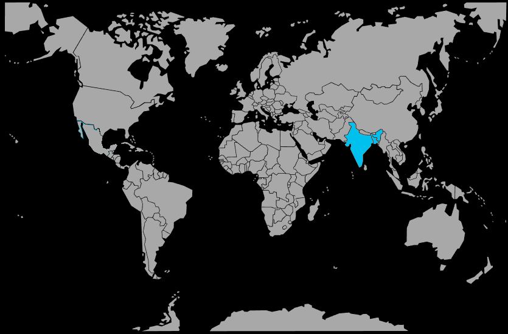

Systématique
- Ordre : Anabantiformes
- Famille : Osphronemidae
- Genre : Trichogaster
- Espèce : Trichogaster chuna

Trichogaster chuna, le gourami miel, est un petit poisson labyrinthidé très paisible d’Asie du Sud, qui atteint en général 4 à 5 cm, légèrement plus pour les plus grandes femelles.
Le mâle en livrée de reproduction présente un corps jaune à orangé vif, avec la gorge et la partie ventrale nettement plus sombres, tirant sur le noir, alors que la femelle reste plus discrète, brun‑miel, avec une ligne latérale sombre.
Le gourami miel est réputé pour son tempérament très calme et timide; il occupe principalement la surface et le milieu du bac, où il évolue tranquillement entre les plantes et sous les feuilles flottantes.
Les mâles peuvent défendre un petit territoire en période de reproduction, mais restent généralement beaucoup moins agressifs que les gouramis nains colorés d’élevage; la cohabitation avec de petits characidés ou rasboras paisibles se passe bien.
Comme tous les labyrinthidés, Trichogaster chuna monte régulièrement en surface pour respirer l’air, grâce à son organe labyrinthe; un couvercle et un air ambiant humide et tempéré évitent les chocs thermiques.
Mode : constructeur de nid de bulles; le mâle érige un nid en surface, souvent sous une feuille ou des plantes flottantes, en mélangeant bulles d’air et salive.
Lors de la parade, le couple s’enlace sous le nid; la femelle libère des œufs que le mâle féconde immédiatement, puis il ramasse les œufs tombés pour les replacer dans le nid et garde seul la ponte.
Pour réussir la reproduction, il est conseillé de prévoir un bac spécifique peu profond, une eau calme et légèrement acide, beaucoup de plantes de surface et de retirer la femelle après la ponte pour éviter qu’elle soit chassée.
Dimorphisme sexuel : le mâle adulte est plus vivement coloré (jaune orangé, gorge sombre), avec une nageoire dorsale plus pointue; la femelle est plus terne, plus ronde, avec une dorsale plus courte et arrondie et souvent une bande latérale foncée visible.
Espérance de vie : en aquarium, le gourami miel vit en moyenne 3 à 5 ans lorsque l’eau est stable, peu polluée, et que le bac propose suffisamment de refuges pour limiter le stress.
Trichogaster chuna habite les zones calmes de rivières, les bras morts, marais et rizières du nord de l’Inde et du Bangladesh, souvent dans des eaux peu profondes, chaudes et riches en végétation.
Le courant y est quasi nul, le fond vaseux ou limoneux et la lumière filtrée par les plantes flottantes, ce qui crée des eaux légèrement teintées où le poisson trouve abris et nourriture en abondance.
Répartition

Origine naturelle :
- Inde (notamment bassin du Gange et du Brahmapoutre) et Bangladesh.
L’espèce n’est pas largement introduite en dehors de son aire d’origine, mais est très répandue en aquariophilie grâce à sa petite taille et son tempérament paisible.
Paramètres de maintenance
Température : 24 à 28 °C.
pH : 6,0 à 7,5, de légèrement acide à neutre.
GH : 3 à 12 °dGH, eau douce à moyennement dure.
Courant : très faible; une filtration douce orientée vers le fond ou les parois permet de garder une surface calme, favorable au nid de bulles.
Volume conseillé : à partir de 60 L pour un couple ou un harem, avec un bac fortement planté, des plantes flottantes et de nombreux abris visuels.
Régime alimentaire
Régime : omnivore à tendance insectivore; dans le milieu naturel, il consomme surtout de petites proies (larves d’insectes, micro‑crustacés) complétées par quelques algues et débris végétaux.
En aquarium, il accepte très bien paillettes et micro‑granulés, mais son état général et ses couleurs s’améliorent nettement avec des apports réguliers de nourritures vivantes ou congelées (daphnies, artémias, vers de vase).
De petites rations variées, distribuées plusieurs fois par jour, conviennent mieux que de gros repas, afin de préserver la qualité de l’eau et d’éviter l’obésité dans ce petit labyrinthe.